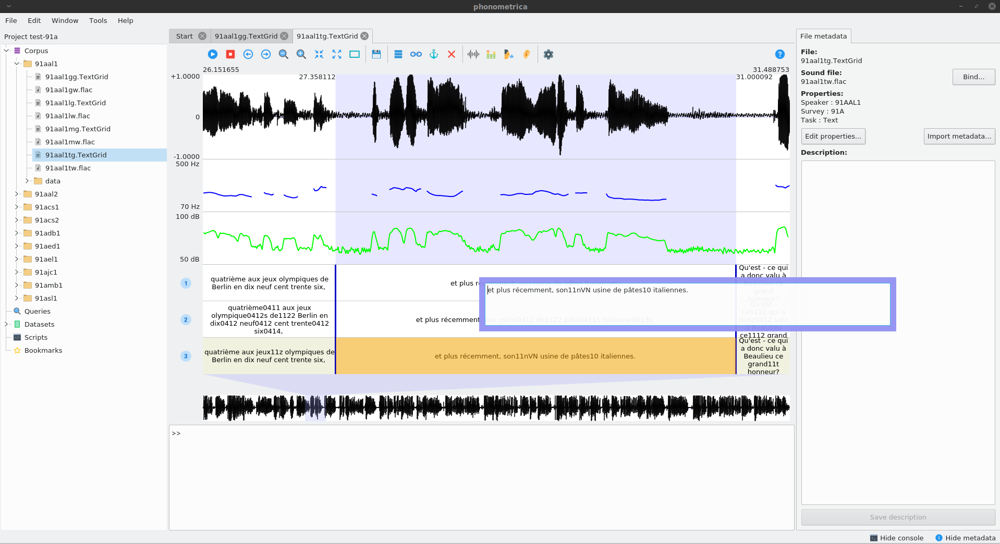

Phonometrica¶
Overview¶
Phonometrica is a free, open-source software toolbox for the analysis of speech data. It offers a user-friendly interface to manage, annotate and query language corpora. It is particularly well suited for dealing with time-aligned data. The main features it offers are:
- Project management: organize files into projects.
- Extensible metadata: files can be annotated with properties, which allow you to sort and organize your data.
- Interaction with Praat: Phonometrica can read and write TextGrid files and open files directly in Praat.
- Powerful search engine: build and save complex queries; search patterns across layers.
- Standard-based: Phonometrica files are encoded in XML and Unicode.
- Scripting engine: Phonometrica can be configured and extended with an easy-to-use scripting language.
Phonometrica runs on all major platforms (Windows, macOS and GNU/Linux) and is freely available under the terms of the CECILL license (version 2.1). The latest version of Phonometrica can be downloaded from https://phonometrica.github.io. If you encounter any problem or bug, please write to the authors.

Download¶
Phonometrica 0.4.1¶
- Windows 7 and later: setup_phonometrica.exe
- MacOS 10.7 and later: phonometrica.dmg
- Linux (Debian 10 / Ubuntu 18.04): phonometrica-0.4.1.deb
- source code: available on GitHub
Topics¶
How to cite?¶
To cite Phonometrica, you can use the following citation:
| [EYC2019] | Eychenne, Julien & Léa Courdès-Murphy (2019). Phonometrica: an open-source platform for phonometrics [Computer program]. Version 0.4.1, retrieved 21 September 2019 from http://phonometrica.github.io |